мировой производитель кухонных моек, смесителей, водоочистителей, измельчителей и различных аксессуаров для кухни
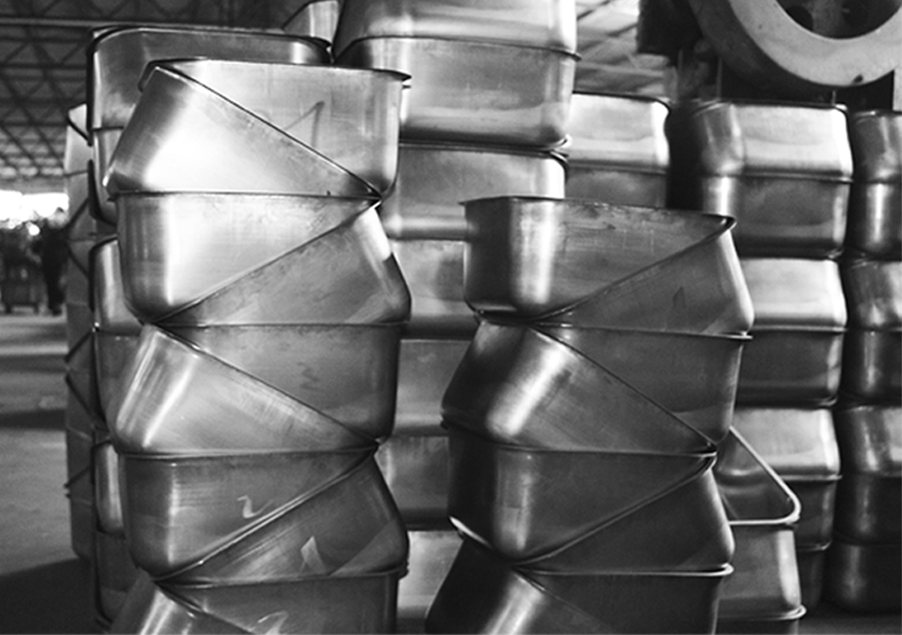
2011
Образование компании ARTEKEY в городе Санкт-Петербург. Компания ARTEKEY начинает сотрудничество с японской компанией OMOIKIRI
2012
Мойки и смесители OMOIKIRI впервые представлены на выставке «Мебель-2012»
2014
После 3 лет тесного взаимодействия с OMOIKIRI компания Artekey становится правообладателем бренда
2015
Продукция OMOIKIRI выходит на рынок СНГ
2016
OMOIKIRI становится генеральным Партнером студенческого Форума инноваций и дизайна «PUSHKA»
2019
Компания OMOIKIRI презентует новый инновационный материал для кухонных моек ARTCERAMIC
2022
Расширение производственных площадок OMOIKIRI, выпуск коллекции моек из NATCERAMIC
2024
Запуск нового направления - сантехника для ванных комнат
1 500 000 +
единиц проданной продукции
30 000 +
дизайнеров сотрудничает с OMOIKIRI
9 000 +
кухонных салонов продают
продукцию OMOIKIRI
2 500 +
партнеров по Казахстану и СНГ
600 +
проведенных
семинаров и вебинаров
250 +
вышедших ТВ передач
с продукцией OMOIKIRI
Производство
Производство OMOIKIRI размещено на ведущих мировых площадках: в Японии, Италии, Турции, Китае и России. Компания изготавливает смесители и мойки из нержавеющей стали, искусственного гранита, керамики, композитных материалов, латуни, а также производит кухонные измельчители, водоочистители и другие аксессуары для кухни. Вся продукция компании отличается эксклюзивным дизайном и контролем качества, простотой и удобством в эксплуатации.
100 +
специалистов в команде
8 000 м2
складские комплексы
Партнеры
Партнеры ценят нас за безупречное качество и эффектный дизайн нашей продукции, индивидуальный подход, поддержку в стимулирующих спрос акциях и наличие более 90% ассортимента в складской программе.
Обучение
Мы заинтересованы в том, чтобы наши партнеры успешно развивались и процветали, поэтому охотно делимся знаниями, накопленными за годы успешной деятельности OMOIKIRI.
Гарантия
Одна из ключевых особенностей OMOIKIRI - клиентоориентированный сервис. Специалисты сервисного отдела оказывают оперативную и персонализированную поддержку клиентам.
Философия
Современный интерьер - это уже не столько про стиль, сколько про заботу о человеке и его комфорте. Это уход от предметов ради предметов в сторону простых форм, функциональности и эргономичности пространства.
Среди всего многообразия товара на рынке каждый человек находится в поиске «своей компании», которая будет близка ему по духу и стилю.
OMOIKIRI непрерывно работает над своим развитием, чтобы соответствовать этим критериям.
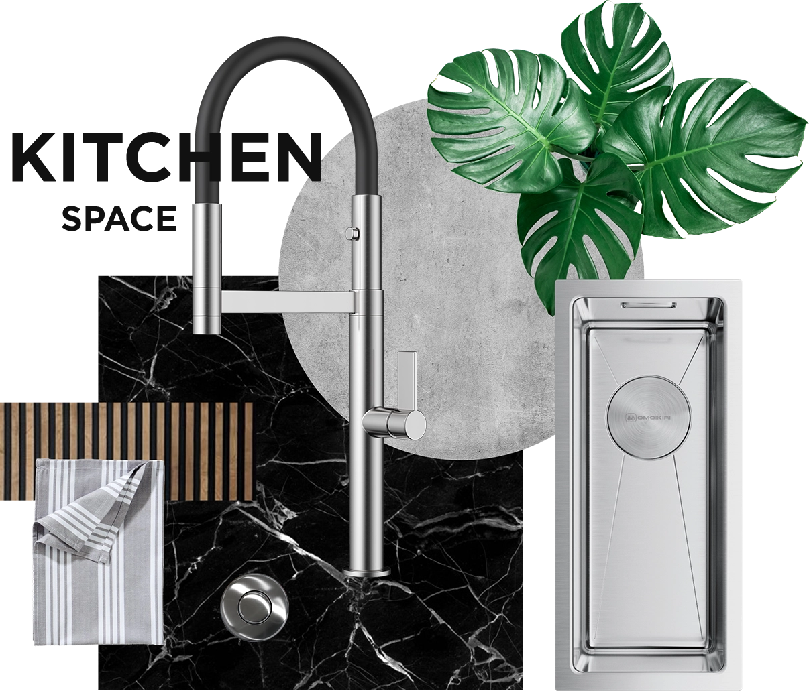
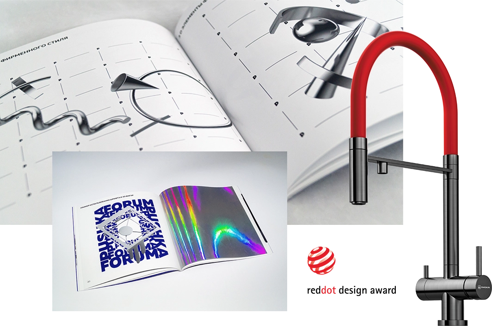
Признание
- 2016: Премия Russian Design Award за вклад в развитие дизайна.
- 2017: Премия «Лучшее для жизни» за инновационные товары для кухни.
- 2017-2019: Награды «За поддержку промышленного дизайна и образования».
- 2019: Премия Red Dot Design Award за визуальную концепцию форума PUSHKA.
- 2020, 2022, 2023, 2024: Статус «Лучшее предприятие отрасли» и высший уровень надежности.
- 2022: Премия ECO BEST AWARD и Best For Life Design Award.
- 2023: Премия «Качество обслуживания и права потребителей» за лучший сервис.
- 2025: Победитель премии RR «Best of the Best» в сегменте индустрии роскоши.
- 2025: Премиум-бренд N1 по продажам и производству кухонной сантехники.
Сотрудничество
с топовыми блогерами
Instagram и YouTube
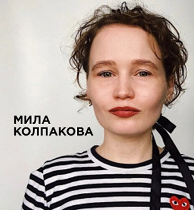
OMOIKIRI сотрудничает
со многими телевизионными программами
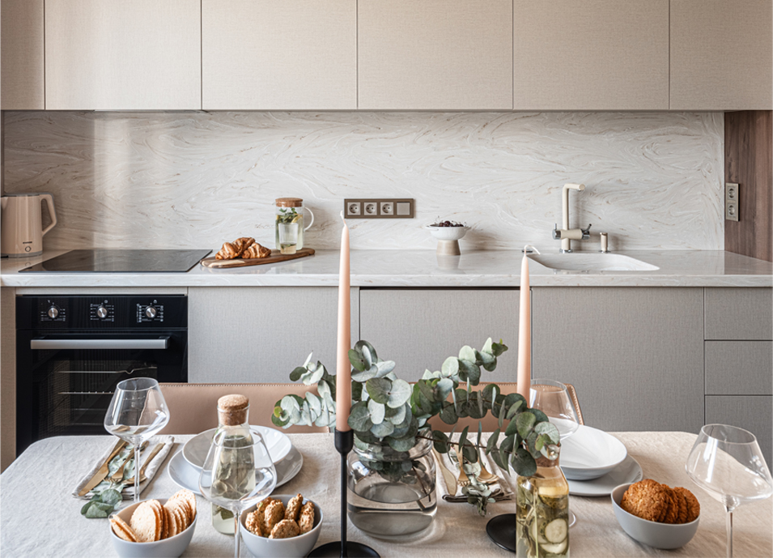
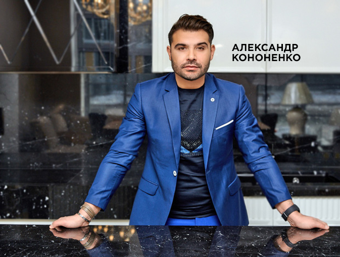
Телепроекты
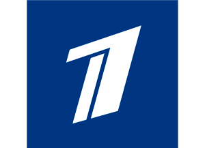
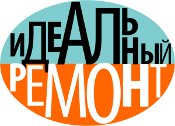
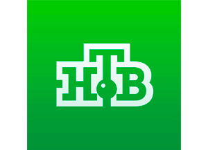
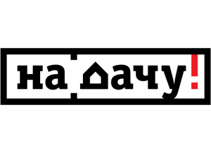
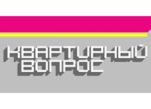
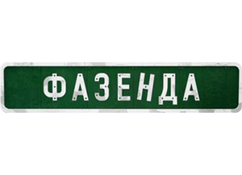
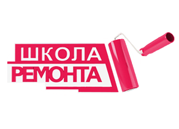
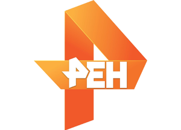
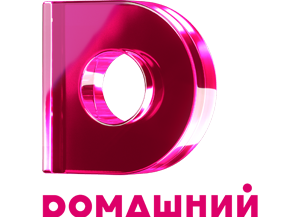
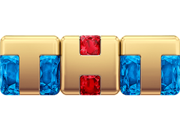
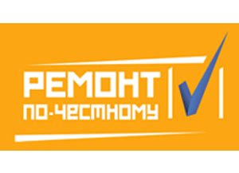